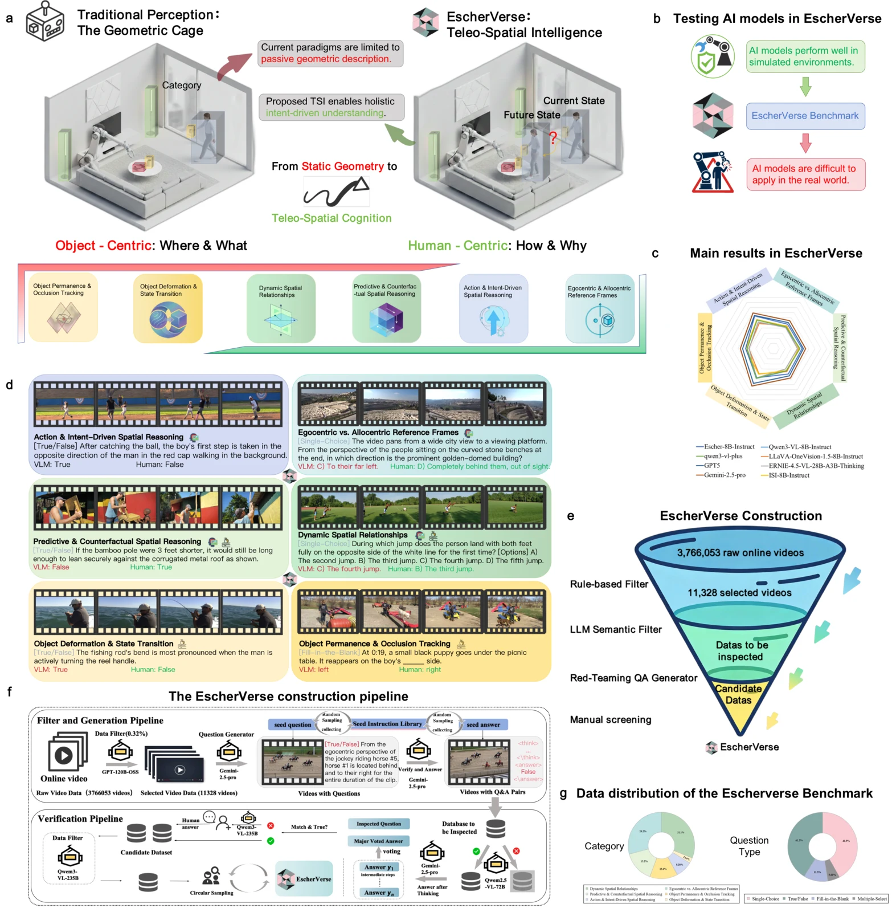

Supported
A large empirical human–model gap persists under the unified EscherVerse zero-shot protocol, including for strong proprietary systems.
Experiment 01 · Public result explorer
An interactive view of the public EscherVerse evaluation, comparing 27 vision-language models with an independent first-pass human baseline across physical dynamics, reference frames, and goal-directed action.
Observed gap
The strongest evaluated model reaches 57.26% overall accuracy. The human mean is 90.62%, and every one of the 11 annotators scores above the strongest model in the released aggregate record.
This is not a generic perception benchmark: the questions require models to connect visible geometry with physical change, viewpoint, and intent.

Explore the evidence
Filter the released rows by model family. Bar length uses the same 0–100 accuracy scale for models and people.
Reading the result
A large empirical human–model gap persists under the unified EscherVerse zero-shot protocol, including for strong proprietary systems.
The aggregate gap does not establish that every error is caused by reasoning alone; perception, temporal sampling, and answer extraction can also contribute.
The public registry distinguishes fresh-inference routes from configuration references and aggregate-only rows instead of treating every reported number as equally reproducible.
Source: EscherVerse public release accompanying Vision-language models lag human performance on physical dynamics and intent reasoning, accepted in principle at Nature Communications.